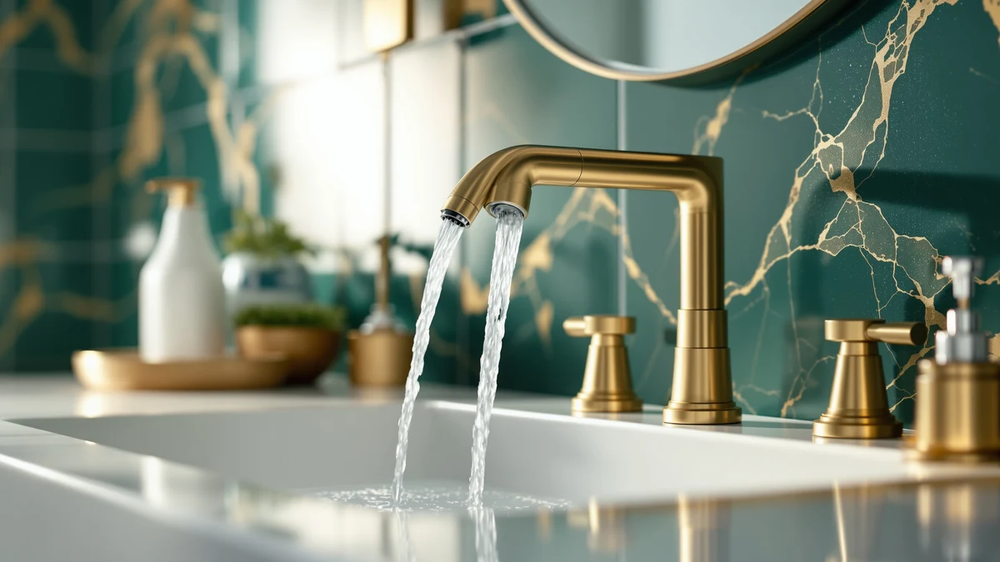

Delta Lineax Touchless Bathroom Review (2026): Worth It?
Prices and picks verified as of September 2026. Independent, reader-supported reviews.


Quick Answer
This delta lineax touchless bathroom review found the DELTA Lineax to be the strongest pick for a home bathroom vanity, thanks to a matching push-pop drain, a decorative Champagne Bronze finish, and three activation modes including a manual handle backup. At $379.00 it costs more than the three commercial-style sensor faucets covered below, so if you're outfitting a shared or public restroom instead, check the Sloan and American Standard alternatives first.
Our pick: Delta Lineax Touchless Bathroom Faucet, $379.00 Check Price on Amazon
Bottom line: our top pick is the Delta Lineax Touchless Bathroom Faucet 1-Hole with Touch On at $379.
Things to Know Before You Buy
- The Lineax costs more because it's built differently. At $379.00, this delta lineax touchless bathroom review found it priced $45.75 above the next closest option, the Sloan SF-2450 at $333.25, and $86.95 above the cheapest, the American Standard NextGen, largely because it includes a matching push-pop drain and a decorative Champagne Bronze finish the other three don't offer.
- Three activation methods, not one. DELTA's Touch2O system on the Lineax lets you start water flow by placing a hand near the faucet, tapping the spout, or using the handle directly, something the Sloan and American Standard sensor faucets don't offer since they run on infrared sensors only.
- The Sloan and American Standard models are built for commercial installs. Both Sloan units include a back-check tee and a Polished Chrome finish typical of public restroom deck faucets, and neither lists a drain assembly, so they aren't a drop-in swap for a decorative home vanity faucet.
- None of these four listings publish a star rating yet. As newer listings, the Lineax, both Sloan units, and the American Standard NextGen don't yet show a rating or review count on Amazon, so early buyers are working from manufacturer specs rather than a track record of owner feedback.
- Installation hole count varies. The Lineax fits 1-hole or 3-hole 4-inch sink configurations with an included deck plate, so measure your sink before ordering any of the four faucets compared here.
This delta lineax touchless bathroom review compares DELTA's $379 hands-free bathroom faucet against three sensor-activated alternatives from Sloan and American Standard, all of which turned up in the same searches for touch-free bathroom fixtures. Bathroom faucet shopping already involves comparing finishes, mounting hole counts, and flow rates across a dozen browser tabs, and touchless models add sensor range and activation method to that list. We pulled together the four listings that show up most often side by side and broke down what actually separates a $379 residential touch faucet from three commercial-style sensor units priced between $292.05 and $333.25.
The DELTA Lineax Touchless Bathroom Faucet is the top pick here, and for a specific reason: it's the only one of the four built for a home bathroom vanity rather than a public restroom deck. Its Champagne Bronze finish, metal push-pop drain assembly, and three activation modes (hand-near, tap, or handle) suit a household sink in a way the Sloan and American Standard units, both designed around commercial back-check tees and bare deck mounts, don't. If you want a decorative touchless faucet with a matching drain for a home renovation, the Lineax is worth its higher price. If you're comparing sensor faucets for a different kind of installation, the sections below explain when one of the three alternatives makes more sense instead.
Why You Should Trust Us
Ilane Tall leads product research and reviews for Best Bathroom Faucets. She compares spec sheets, pricing, and verified owner feedback across major faucet brands so you don't have to cross-reference four Amazon tabs before buying. For this delta lineax touchless bathroom review, she pulled DELTA's published Touch2O specs for the Lineax against the infrared-sensor specs Sloan and American Standard list for their commercial faucets, then priced all four as of publication. Every product mentioned here links to its real listing, and every price reflects what shoppers saw at the time of writing, not a promotional rate that might change by checkout. Where a listing leaves out a detail, like flow rate or hole count, we say so instead of guessing.
Our Research Process
We do not run a physical testing lab for bathroom faucets, so nobody on our team installed the Lineax or ran water through any of the four faucets in this comparison. Our research process for this delta lineax touchless bathroom review centers on comparing manufacturer specs, tracking current Amazon pricing, and reading through the feature claims DELTA, Sloan, and American Standard publish for their touch-free lines. Because none of these four listings has accumulated a star rating or review count yet, we leaned more heavily on spec comparison than on owner feedback for this particular review, and we call that out rather than inventing a review count that doesn't exist. We treat manufacturer copy the same way for all four brands: useful for what a faucet is built to do, not a substitute for how it holds up once real owner reviews start coming in.
Overview & Specs

Delta Lineax Touchless Bathroom Faucet
What we like
- Three ways to activate water: hand-near sensor, tap-to-start, or the handle itself
- Includes a matching metal push-pop drain, so you're not sourcing one separately
- Fits 1-hole or 3-hole 4-inch sink configurations with an included deck plate
Flaws but not dealbreakers
- Costs $45.75 to $86.95 more than the three sensor faucets in this comparison
- No published rating or review count yet, so early buyers can't lean on a track record
| Material | Brass + finish |
| Size | — |
At $379.00, the DELTA Lineax Touchless Bathroom Faucet is the most expensive of the four products in this delta lineax touchless bathroom review, and the price difference tracks with what it includes. DELTA built the Touch2O system into the Lineax with three separate ways to start water flow: placing a hand near the spout, tapping the faucet surface, or turning the handle the traditional way. That third option matters for a bathroom that gets shared use, since a housemate skeptical of touchless fixtures, or a sensor that needs a battery change, can still fall back on manual operation.
The Champagne Bronze finish and included metal push-pop drain also set the Lineax apart from the three alternatives below, none of which ship with a matching drain assembly. DELTA lists the faucet as fitting 1-hole or 3-hole 4-inch sink installations, with an optional deck plate included for the wider configuration, which covers most standard bathroom vanities. What the listing doesn't yet include is a star rating or review count, since this is a newer addition to DELTA's touchless line, so buyers weighing this purchase are working from manufacturer specs rather than an established pattern of owner feedback.
What We Liked
The three-way activation stands out most in this delta lineax touchless bathroom review. Sensor faucets that only respond to hand movement can frustrate a household when the sensor misreads a gesture or the battery runs low, so having a physical handle as a fallback on the Lineax removes a common complaint about touchless fixtures. The included push-pop drain is a smaller detail but a practical one: it means you're not separately sourcing a drain assembly that matches the faucet's finish, an extra step buyers of the Sloan and American Standard units would need to handle themselves.
DELTA's flexible installation options also work in the Lineax's favor. Fitting both 1-hole and 3-hole 4-inch sinks with one included deck plate means it can replace a wider range of existing faucets than a single-configuration model, which matters if you aren't certain of your current sink's exact setup before you order.
What Could Be Better
Price is the clearest tradeoff. At $379.00, the Lineax costs meaningfully more than the Sloan and American Standard sensor faucets in this comparison, and the gap climbs to nearly $87 against the cheapest option, the American Standard NextGen Selectronic. If your bathroom is a basic vanity replacement and you don't need a matching drain or a decorative finish, that premium may not be worth it.
The other gap is feedback, not features. As a newer listing, the Lineax hasn't accumulated a star rating or review count on Amazon yet, so buyers can't check how the touch sensor or the drain assembly hold up after months of daily use the way they could with an established, widely reviewed faucet. That's not a flaw in the product itself, but it's a real consideration if you would rather buy something with a longer track record.
Who Is It For?
This faucet from our delta lineax touchless bathroom review fits homeowners renovating a bathroom vanity who want hands-free operation without giving up a manual handle as a backup, plus a finish and drain that match without extra shopping. It's a reasonable pick for households with kids or anyone who would rather not touch a faucet handle with soapy or messy hands. If you're weighing this against a standard handle-only setup, our touchless vs. manual faucet guide breaks down the tradeoffs in more detail.
Buyers who need a faucet for a commercial or public restroom setting should look at the Sloan or American Standard units instead, since those are built around the back-check tee and bare deck-mount hardware that commercial plumbing typically requires. Anyone comparing DELTA against other major brands before committing can also check our Moen vs Delta breakdown. Buyers working with a tight budget or a faucet that doesn't need a decorative finish should compare the American Standard NextGen below first, since it's priced nearly $87 lower.
Alternatives to Consider
If the price or the residential focus of the Lineax doesn't fit what you need, three sensor faucets came up in our research for this delta lineax touchless bathroom review. All three lean commercial, with back-check tees or bare deck mounts rather than a decorative home finish.

Editor's Pick
Sloan SF-2450 Sensor Faucet 0.5
A commercial-grade infrared sensor faucet with an adjustable sensing range and a back-check tee, built for public restroom deck mounts rather than a decorative home vanity. Worth a look if you need a reliable touch-free faucet for a shared or commercial bathroom.
$333.25
Check Price on Amazon
Best Value
Sloan SF-2350 Sensor Faucet 0.5
The lower-priced sibling to the SF-2450, with the same 0.5 GPM water-saving flow and adjustable infrared sensor, for $9.52 less. A solid choice if you want Sloan's sensor technology without paying for the SF-2450's extra range adjustment.
$323.73
Check Price on Amazon
Premium Choice
American Standard NextGen Selectronic Touchless
The cheapest of the four faucets here, but not a stripped-down option: its self-calibrating sensor adjusts to lighting and environment automatically, and an above-deck handle with a cover plug helps prevent tampering in shared spaces. A strong pick if self-calibration matters more to you than a decorative finish.
$292.05
Check Price on AmazonDoes the Delta Lineax Touchless Bathroom Faucet still work if the sensor stops responding?
Yes.
Is the Delta Lineax Touchless Bathroom Faucet worth $379 compared to the Sloan and American Standard options?
It depends on what you're installing.
Frequently Asked Questions
Does the Delta Lineax Touchless Bathroom Faucet still work if the sensor stops responding?
Is the Delta Lineax Touchless Bathroom Faucet worth $379 compared to the Sloan and American Standard options?
How many mounting holes does the Delta Lineax Touchless Bathroom Faucet need?
Final Verdict
This delta lineax touchless bathroom review comes down to what kind of faucet you're actually installing. If you're upgrading a home bathroom vanity and want hands-free activation, a matching drain, and a decorative finish, the DELTA Lineax Touchless Bathroom Faucet earns its $379.00 price over the three commercial-style sensor faucets covered here. If you're outfitting a shared or commercial restroom instead, the Sloan SF-2450, Sloan SF-2350, or American Standard NextGen Selectronic above will likely serve you better and cost less. Either way, confirm your sink's hole configuration before you order, since that detail decides which of these four options actually fits.